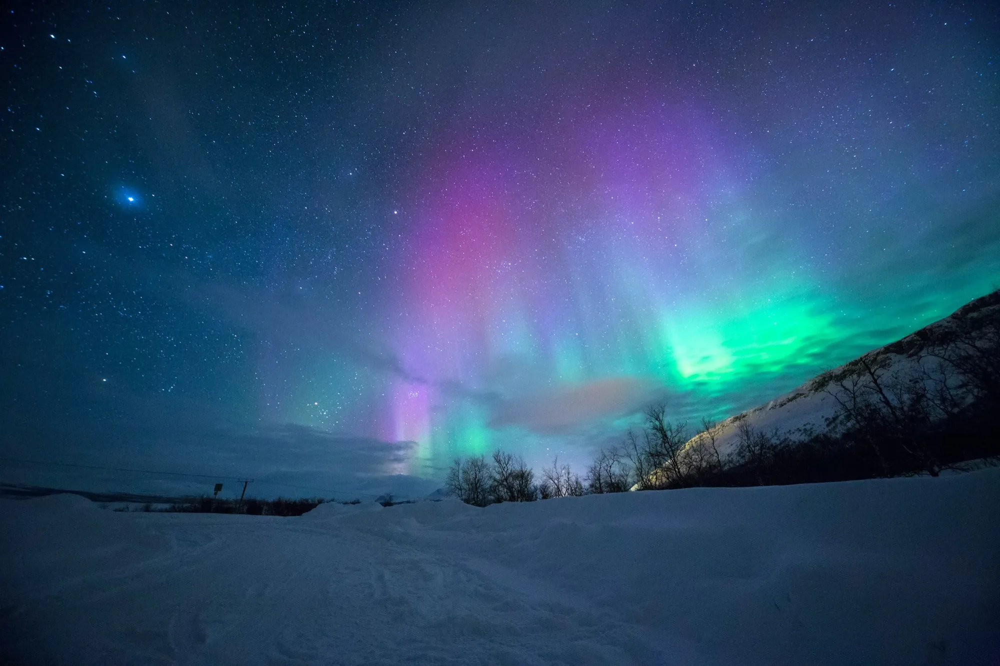
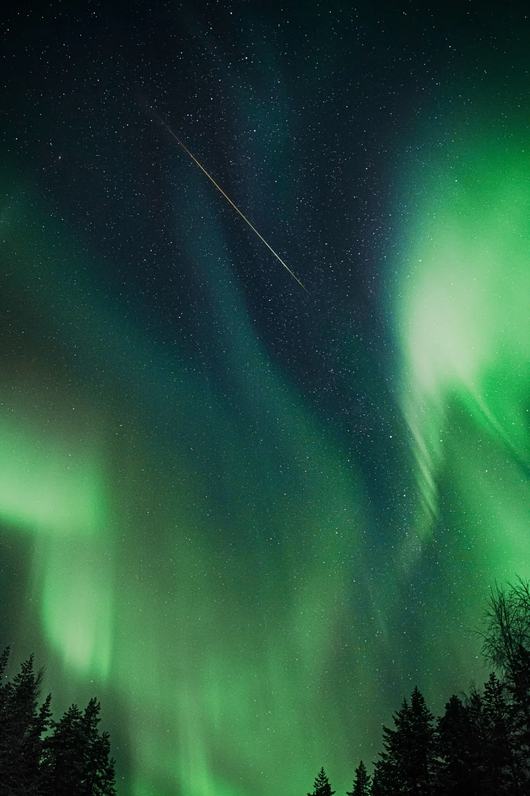
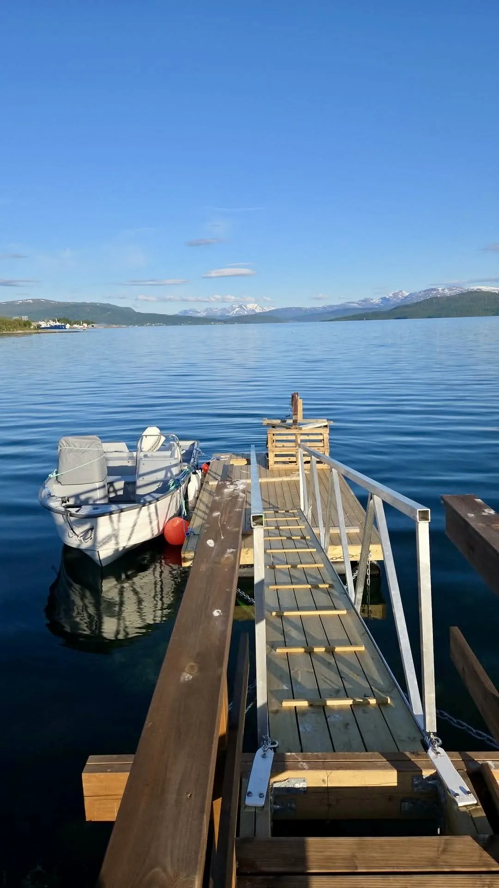

The northern lights have no fixed appointment. They appear when the conditions are right — when the solar wind is strong enough, when the sky is clear, when you are dark enough and north enough to see them. You cannot summon them. What you can do is put yourself in the best possible position to be there when they arrive.
Out on the fjord in the winter dark, you are in one of the best positions available. The water is flat and black. The mountains of Senja rise on all sides, their snow-covered flanks just visible against the sky. There are no streetlights out here, no car headlights, no glow from a town to wash out the overhead. The sky is enormous. When the aurora begins — whether it comes as a faint green smear across the horizon or a full curtain of colour that fills the sky — you will see all of it, and its reflection will be moving on the water below you at the same time.
It is a private trip: one boat, one skipper, your group and nobody else. We leave Finnsnes at 20:30, after the town has gone quiet, and stay out for three hours across the late evening, when the aurora tends to be at its most active. Everyone is zipped into an insulated flotation suit before we cast off, so the cold stays outside and you can stay on deck as long as the sky deserves it.
How the evening works
- By 15:00 — we message you with the go/no-go call, based on the aurora forecast, cloud cover and sea conditions. If tonight looks poor, we move you to a better night at no cost.
- 20:15 — meet at Finnsnes harbour. We fit everyone with a flotation suit and run through the safety briefing.
- 20:30 — cast off. Your skipper heads away from the lights of Finnsnes, into the part of the fjord where the sky is clearest, and repositions through the evening as the forecast and cloud move.
- On the water — hot drinks and a light snack, help setting up your phone or camera for the aurora, and the skipper photographing your group under the lights.
- Around 23:30 — back at the harbour. Your aurora photos arrive the next day.
Our northern lights promise: the aurora is never guaranteed — it depends on solar activity and clear skies, and neither is within our control. So: if we cancel because of weather, sea or forecast, you choose another night or a full refund. And if we go out and the lights don't show, your second evening is half price.
Aurora outlook for Finnsnes
We combine NOAA's forecast of aurora activity (the Kp index) with MET Norway's cloud forecast for Finnsnes and the darkness of the sky during our 20:30–23:30 window, and rate each night Good, Fair or Low. Updated every three hours. It's an estimate, not a promise — the skipper makes the final call in the 15:00 go/no-go message. Aurora forecast: NOAA Space Weather Prediction Center. Weather data: MET Norway, licensed under CC BY 4.0.
What's included
- 3-hour private cruise from Finnsnes harbour — the whole boat for your group
- Local skipper and guide who reads the aurora forecast and positions the boat
- Insulated flotation suits for everyone
- Hot drinks and a light snack on board
- Help with phone and camera settings for aurora photography
- Photos of your group under the lights, sent the next day (on nights the aurora shows)
- Go/no-go forecast message by 15:00 on the day
- All safety equipment
Not included
- Transport to and from Finnsnes harbour
- Meals and alcohol
Good to know
- Season: 15 October to 31 March. In late March, as the evenings get lighter, departure moves to 21:30
- Up to 5 guests. Children are welcome — tell us their ages when booking so we bring the right suit sizes
- Dress in warm layers under the suit: thermal base layer, wool or fleece, hat, gloves and warm boots
- The skipper may shift departure by up to an hour on strong forecasts — confirmed in the 15:00 message
- Flexible on dates? Tell us your window and we'll pick the night with the best forecast
- Free cancellation up to 48 hours before departure


